Challenge
the aim is to simplify the whole lifecycle and navigation of the product.
The product was stable but the lifecycle was too complex and diffficult to understand. NIA is one of the leading network industries in india and their vision was to re-design one of its kind product. We needed to declutter each and every module and most of the modules are interdependent with one another. Also they needed a UI that is not used in their field itself.
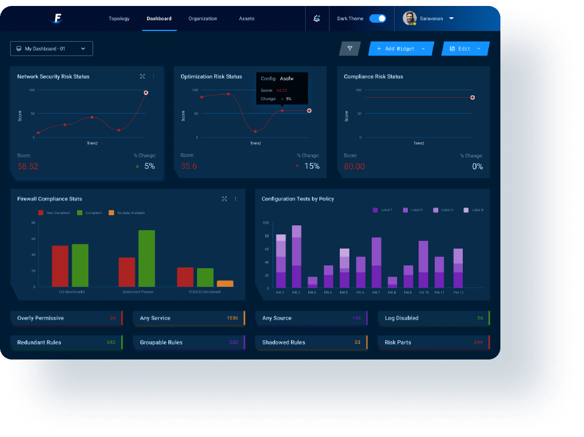
Process
Through the initial product discovery workshop , we collaborated with LuLu’s multidisciplinary team to align ourselves with their goals. We conducted stakeholder interview to understand how they want to project their brand and their target audience. With initial research & analysis, we ideated & designed features that would add value to the users’ journey right from exploration to feedback.
Defining the life cycle of the product
The primary objective is to determine the lifecycle of the product and simplify it by removing the unnecessary elements from it. We thought once we crack the life cycle, it will directly lead us to the navigation.
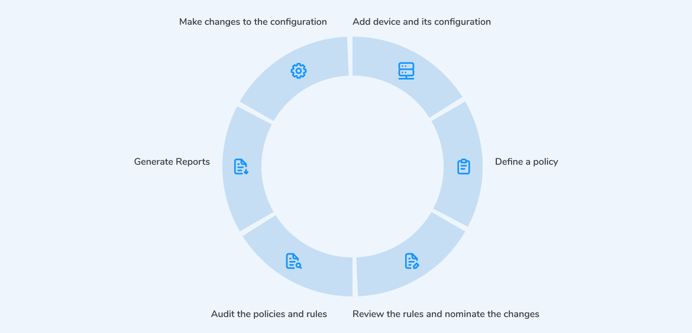
Navigation
Framing the navigation was very difficult for us, since most of them were interdependent. We collaborated with NIA and understood the functionalities of each and every module and finally came up with a navigation that was simple and intuitive for the targetted user group.
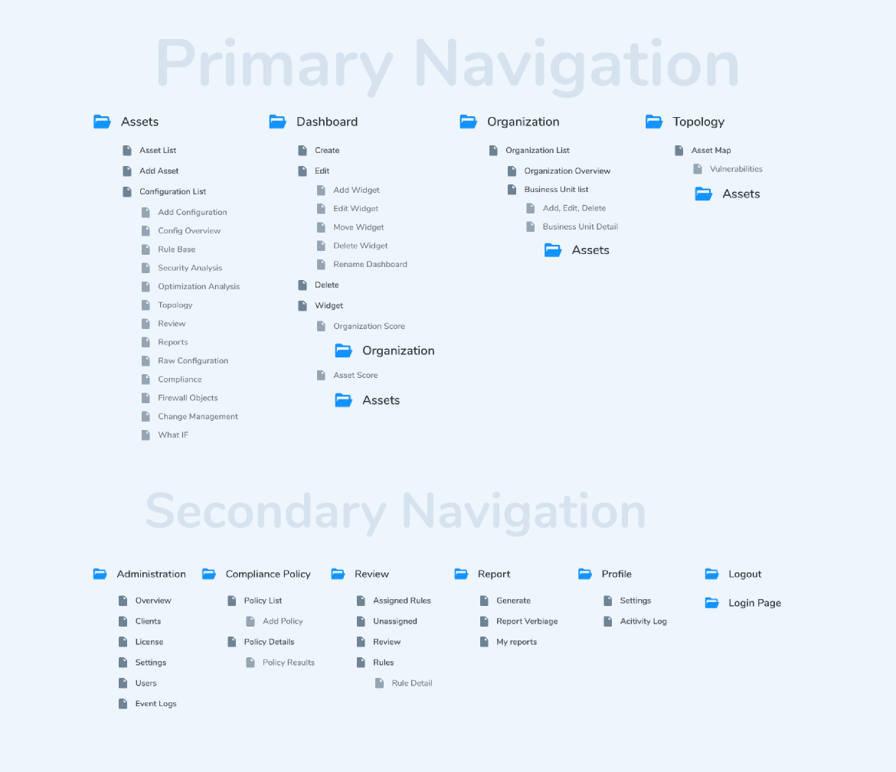
Wireframes
The wireframes have been iterated clearly to frame the initial flow and remove complexities without putting a lot of cognitive load.
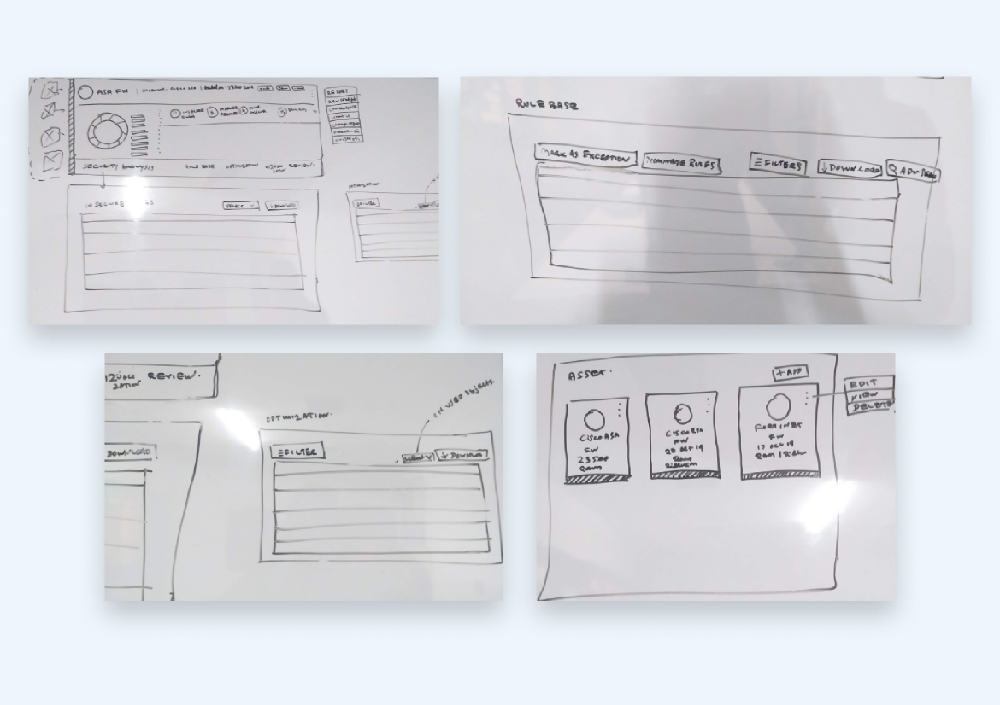
Product Design
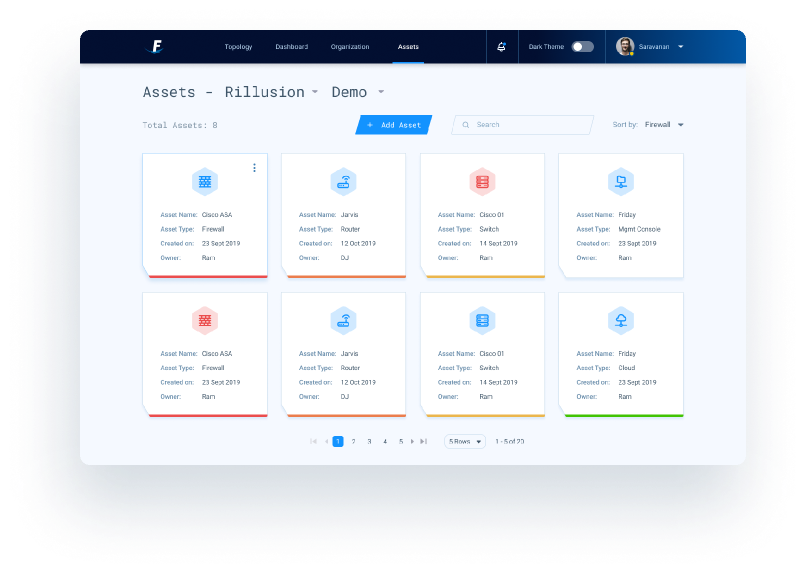
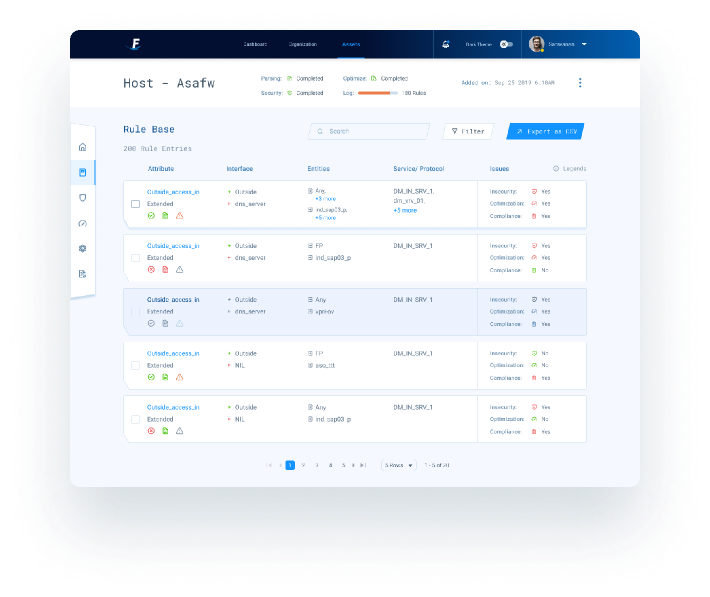
Export Report
The report csv file has so many fields, we classifed and grouped the field and arrage however the user want while exporting the report and preset feature is something we designed so that it will ease the export flow when they are doing frequently.
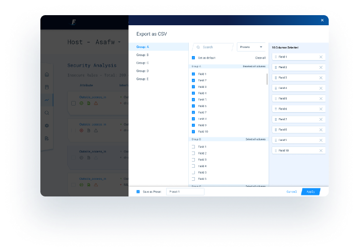
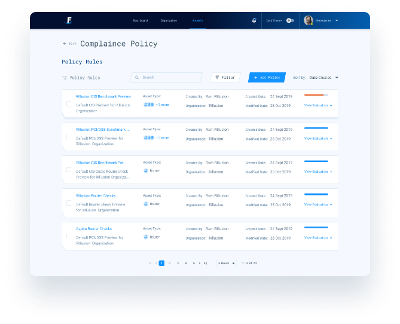
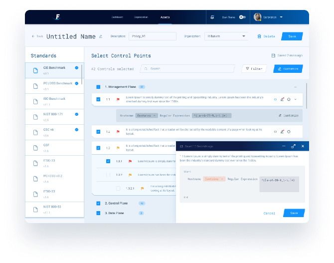
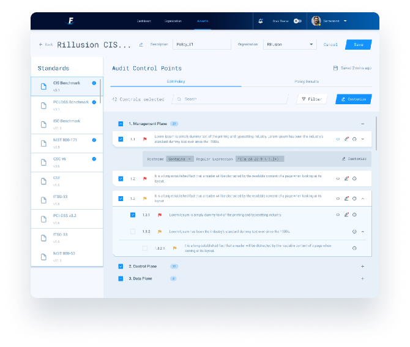
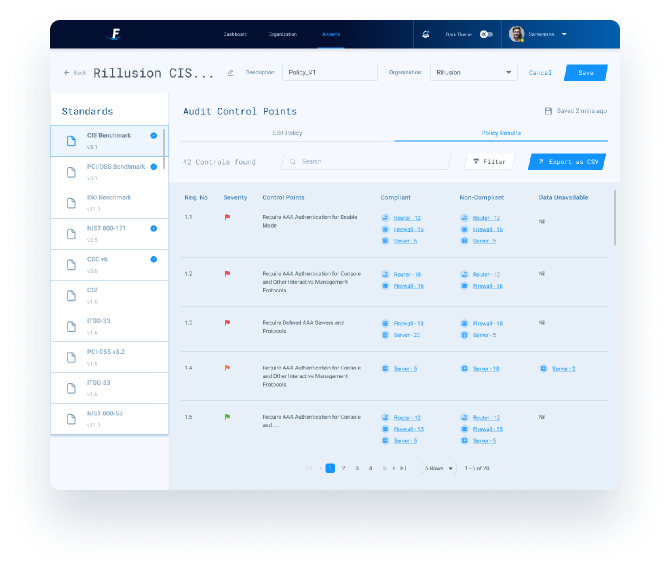
Review
The review itself a huge flow, where the user will review the rules, nominate it, mark it as an exception and so on. We split the layout into two to keep all the primary informations, features and functionalities in the screen so that the user need not search for every item.
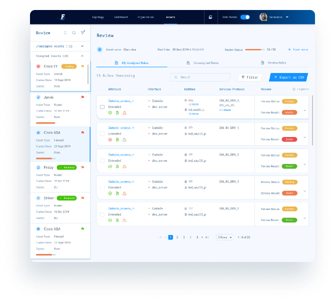
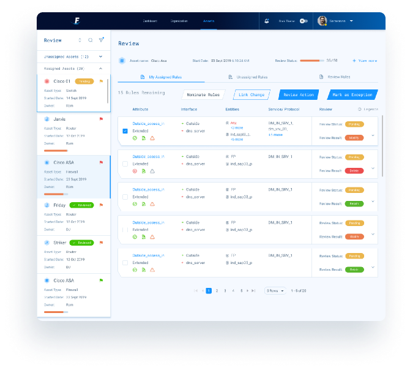
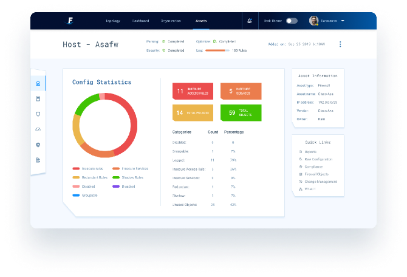
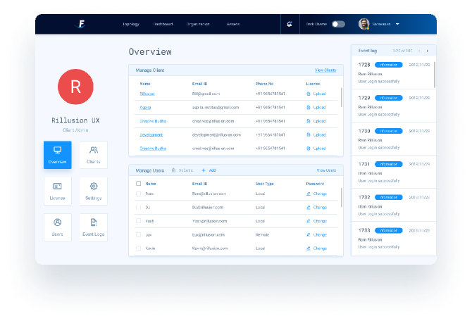
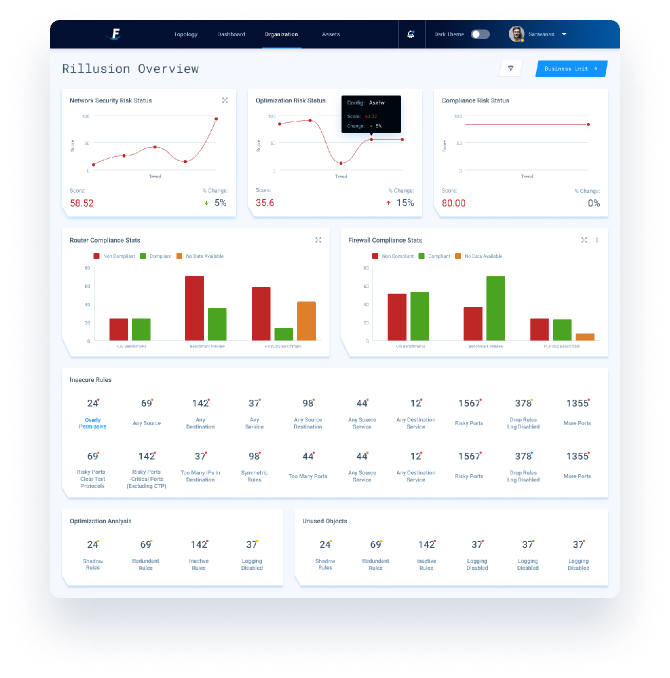
Dashboard
The Dashboard was supposed to be fully customizable but after analysing the users we restricted the customizablity features to some extent by removing few that is affecting the product.
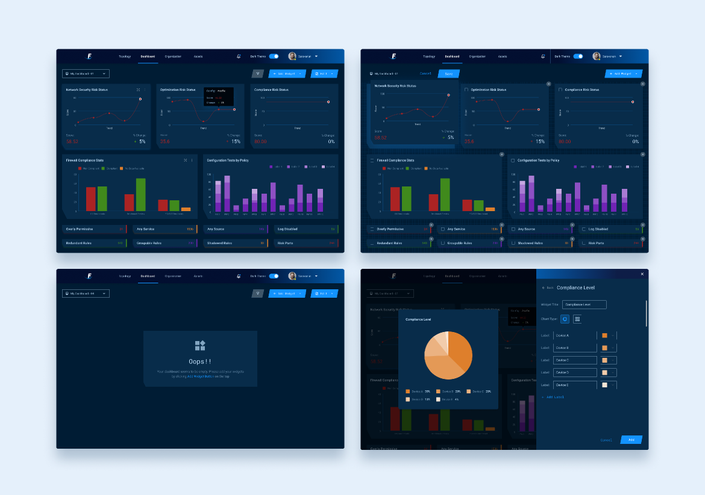
Topology
The core purpose of topology is to identify the traffic in the network. It has been designed so that users can easily view the nodes based on its severity. And find the details about the node side by side and navigate to its vulnerabilities that causes the traffic.
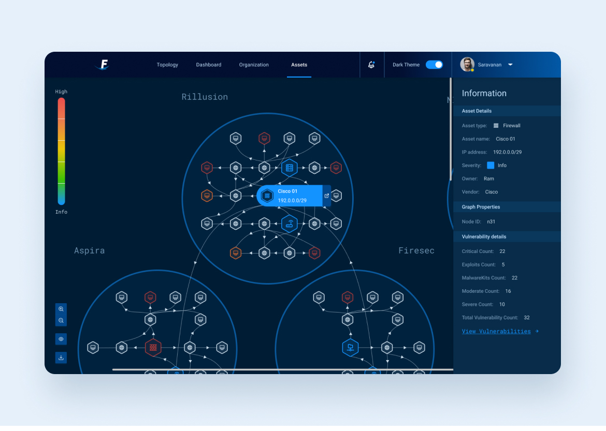
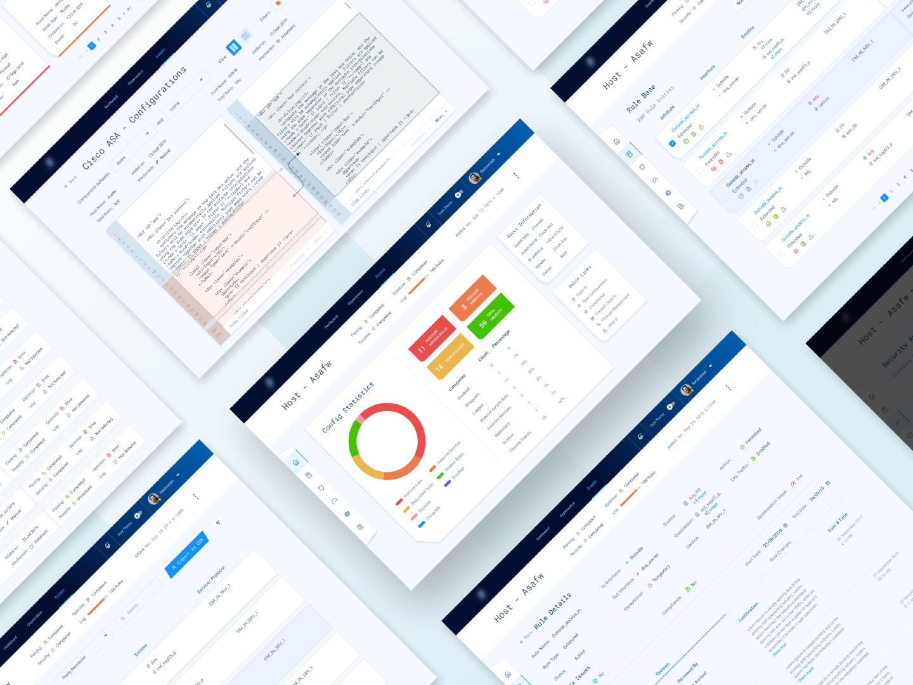